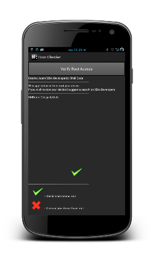

Chrome
Take a look at some of my Chrome themes and extensions. Chrome is my favorite browser and I love working with it. You can grab one of my free themes over on the Chrome Web Store.
Android
Check out some of my apps on the Google Play Store. These are all free and you can read more about some of them below. I have published several applications and enjoy working with Android.
Web
Go to my personal website and read more about what I do. I blog regularily about open source technology and web development. I also offer recommended reading for learning a new technology.
About Dan
My name is Daniel Blair. I am a technology enthusiast and self proclaimed guru. I specialize in Linux and Android development and have released several applications of my own here on the site. I am a big fan of compute hardware and software.Outside of the world of computers I am a full time single dad and I am also a college student. I went to high school at Sturgeon Screen Collegiate and I studied electrical house wiring and computer hardware. I am studying business information technologies (BIT) at Red River College. I am a big fan of making stuff work that shouldn’t so I have had several projects like running Mac OSX on my hp pavilion and Android on my eeePc. I believe my strength comes not from knowing everything but in the ability to figure things out quickly and efficiently.
I am the type of person who is very passionate about what I do. Recently I have gotten into Android application development and have developed several apps with over several thousand downloads. I have also gotten into web development and web site building. I have a long time love for Linux and the entire open source community. I spend some of my time helping people out on Ask Ubuntu. I have recently discovered I enjoy writing tutorials so I have opened up an entire section on the site for Tutorials. I try to be very ambitious and new technologies do not scare me off. I finish all the projects I start.
I would say I have pretty reasonable short and long term goals. I would say that I want this site to help me pay the bills but that is a long shot. I would like to continue working with Android and other mobile platforms and see where that takes me. I am just as interested in the hardware as I am in the software.
I regularily maintain and and actively post on my personal Technology blog CMDann.ca. This is a website that's main focus is tech news about Android, Linux, web development and Linux Gaming. I host giveaways and events for the active users and I also publish my open soruce code and applications to the site as well. There is also a support forum for my applications where users can get help with my code or application.
Chrome Development
I have developed a couple different Chrome extensions. Chrome is fun to work with because they really provide you with an excellent foundation to build off of. The developer tools built into the Chrome browser allow me to efficiently get my job done.
Wiki Popup
This is a simple extension that adds a small Wikipedia icon beside your search bar at the top of Chrome. When clicked this will open a small window that loads the mobile version of the Wikipedia website. You can make a quick search without leaving your current page. This is intended for easy research and you can grab it over here.
Auto Affiliate
This is an open source Chrome extension that I have been working on that is designed primarily for NPOs. This extension takes the affilaite ID you provide it and applies it autmatically to purchases made by the end user. This does not affect the final transaction in any way and does not have the ability to view sensitive information. When in use the affiliate ID is automatically applied to the URL of the merchant site. This is currently optimized for Amazon but can be easily modified to include your affiliate program. You can grab an affiliate program set up to use my Amazon affiliate on the Chrome Web Store here. You can check out my open source repository for this extension over here.
Chrome Themes
Silver
This is a nice silver theme that is close to the default browser skin but with a lot more silver. This theme works great on Mac OS to give you a fluid color palate across your desktop. This theme is my personal favorite and you can grab it on the web store right here.
Dark Chrome
This theme is a darker theme with blue accents. This is the color scheme of a previous version of my site that I thought would make a nice theme. This goes particularily nice with laptops that have blue LEDs or blue LED backlit keyboards. You can grab it on the Chrome Web Store over here.
Black Metal
This is a perfectly black theme. This is my most popular theme currently available with several hundred downloads and some excellent reviews. This theme works best on the Gnome Shell desktop environment on Linux but it works nicely all around. You can check it out here.
Android Development
I enjoy working with android and have developed several apps. Some of these are open source and all are available for free on the google play store. I do not charge for any of these.Android gived you the flexibility to do what you want to do with your device and with your apps. You have access to different markets, types of phones, high end devices and even low end affordable ones. There are many different opportunities when it comes to Android.
Root Checker
This is an open source application that allows you to verify the root status of your Android device. This application will not actually perfom the Root process (slightly more involved than one click of a button) but it does supply you with diagnostics information of your device. This application has been downloaded over 4000 times and I actively maintain the open source repository over on GitHub. This app is totally free for you to download and use, or even modify to your hear's content.

Nexus 7 Camera Launcher
The Nexus 7 does not come by default with a camera launcher application. The device only has a front facing camera that you can use for skype or other video apps. I assume that they decided nobody would want to take a picture with the front facing camera. This application allows you to launch the camera and take a picture. This application has been downloaded over 9000 times and is getting great reviews.


Web Development
I enjoy working with web technologies to develop nice, usable websites. I have worked with some small businesses and not for profit organizations to develop websites using a variety of different technologies. The content management system of my choice is WordPress. It allows you to create a nice, strong back end for somebody and you can theme it however they like. From there you can do so much with it. I also enjoy using HTML5, CSS3, JavaScript and jQuery to make the web perform the way it is supposed to.
The Attachment Network of Manitoba
I picked up where some fellow students left off. I implemented search engine optimization SEO) and analytics to the site and have been actively helping maintain the website. This site is built using WordPress and OSCommerce and is styled using CSS and HTML. I do a wide variety of tasks for this website.
EKM High End Detailing
This is a website developed for a small business. I am offering hosting and maintenance. This website is being hosted on am Ubuntu server running LAMP. The site was developed using HTML5, CSS3, JavaScript, Jquery, and PHP. The focus was on showing the style of the customer and allowing for easy social advertising.
Moosejaw Zombie Walk
This is a WordPress website that I made for the zombie walk in Moosejaw Saskathewan. This website has a custom theme and is using SEO, Google Analytics and WordPress Statistics. The site is also using custom event handling plugins and beautiful galleries for posting events from the zombie walks.